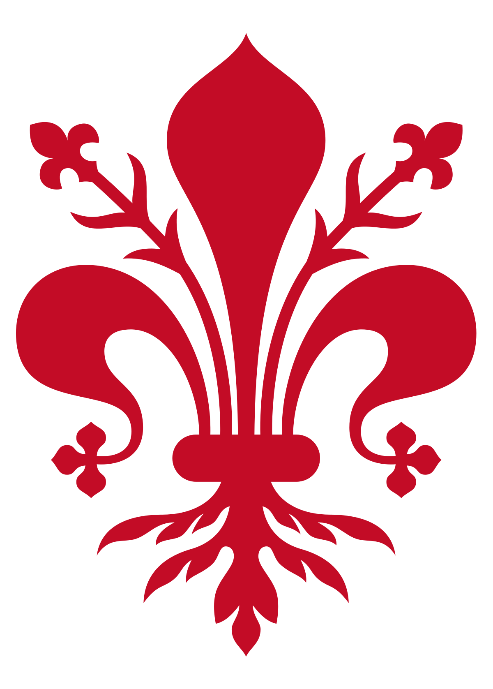
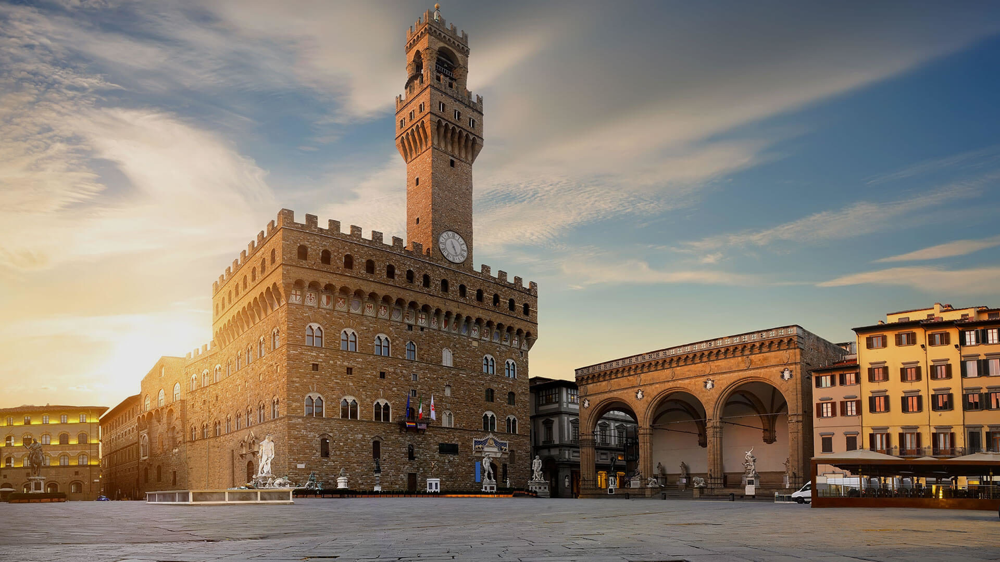

Seguici sui Social:


 VISIT FIRENZE
| Piazza della Signoria | Ponte Vecchio | Santa Maria del Fiore |
Piazza della Signoria è la piazza di Firenze, sede del potere civile e cuore della vita sociale della città. Si trova nella parte centrale della Firenze medievale, a sud della cattedrale di Santa Maria del Fiore. In passato ha assunto diversi nomi, come piazza dei Priori o piazza del Granduca.Situata nel centro storico, piazza della Signoria è sempre stata il centro politico e della vita civile di Firenze. Piazza della Signoria è raggiungibile
La cattedrale metropolitana di Santa Maria del Fiore, conosciuta comunemente come duomo di Firenze, è la principale chiesa fiorentina, simbolo della città ed uno dei più famosi d'Italia; quando fu completata, nel quattrocento, era la più grande chiesa al mondo, mentre oggi è ritenuta la terza in Europa dopo San Pietro a Roma e il Duomo di Milano. Essa sorge sulle fondamenta dell'antica cattedrale di Firenze, la chiesa di Santa reparata, in un punto della città che ha ospitato edifici di culto sin dall'epoca romana. La costruzione del Duomo. Ordinata dalla Signoria fiorentina,inizia nel 1296 e termina dal punto di vista strutturale soltanto nel 1436. i lavori iniali furono affidati all'architetto Amolfo di Cambio per poi essere interrotti e ripresi numerose volte nel corso dei decenni (da Giotto, Francesco Talenti e Giobanni di lapo Ghini). Al completamento della cupola del Brunelleschi segui la consacrazione da parte di papa Eugenio IV il 24 marzo del 1436. la dedica a Santa Maria del Fiore avvenne in corso d'opera, nel 1412.
Il Ponte Vecchio è uno dei simboli della città di Firenze ed uno dei ponti più famosi del mondo. Attraverso il fiume Arno circa 150 metri a valle dell'area in cui il fiume presenta naturalmente uno dei punti in cui l'alveo è più stretto all'interno della città di Firenze nel suo tratto a monte della Cascine. L'area in questione è ai Canottieri sotto gli Uffizi. Nell'antichità esisteva un guado. Ponte Vecchio è uno dei ponti più vecchi di Firenze. forse anche il più vecchio. All'origine era circondata da quattro torri e comprendeva tre campate a tutto setso. É stato poi ricostruito da Taddeo Gaddi in seguito ad un'alluvione che ha causato la sua distruzione. Dopo la ricostruzione il ponte divenne a sesto ribassato. Al giorno d'oggi è molto famoso a meta di numerosi turisti.
Seguici sui Social: